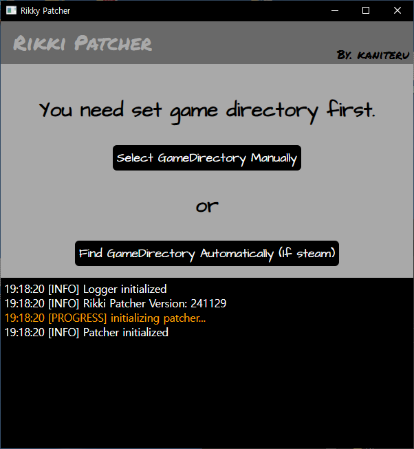
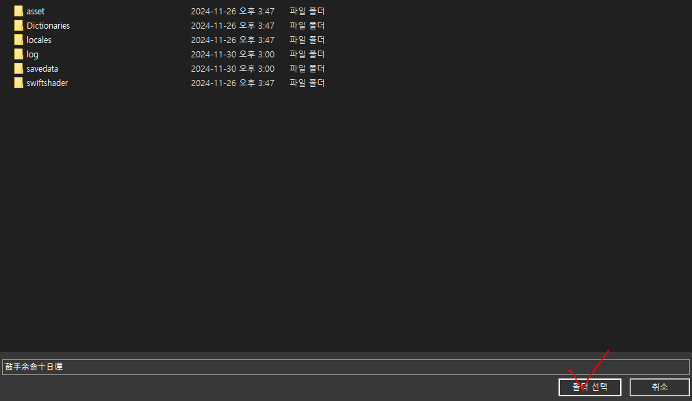
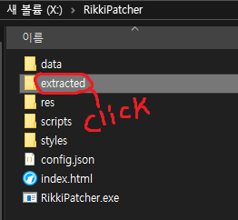
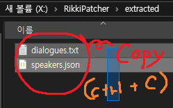
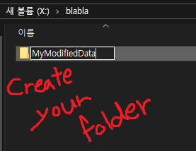
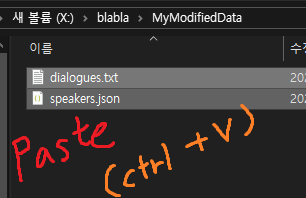
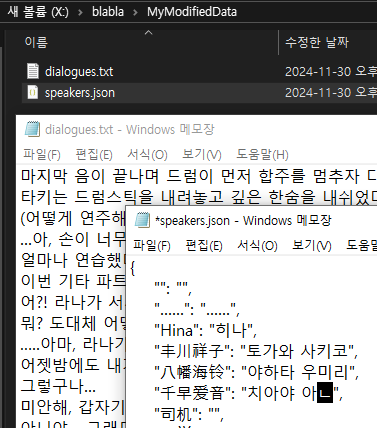
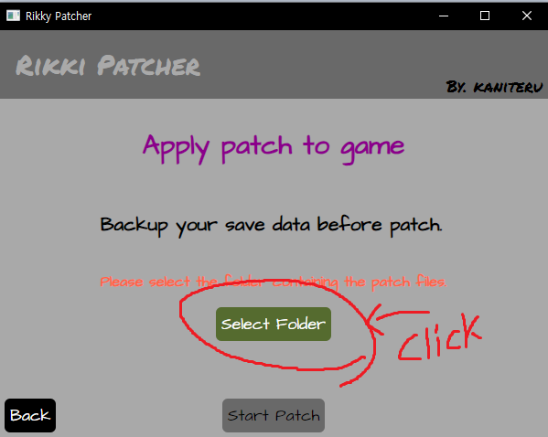
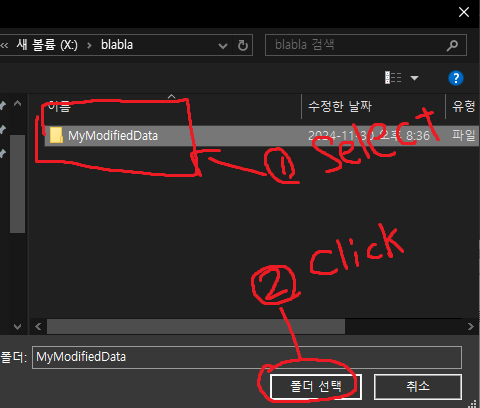
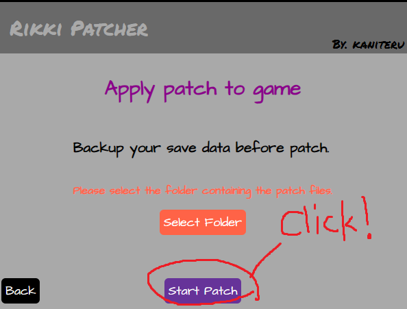

Download patcher here or build self
If you installed game using steam, press the 'Find GameDirectory Automatically' button.
If not, press 'Select GameDirectory Manually' then, select the folder contains game executable(.exe) file.


Extract all modifiable data from game.
The extracted data will be saved in 'extracted' folder where 'RikkyPatcher.exe' is located.
Modify game using imported data.
Press the 'Apply patch to game' button then, select the folder containing the modified data and press 'Start Patch' button.
1. Use 'Extract data from game' then copy the extracted data.


2. Create new folder.

3. Paste the data into created folder.

4. Modify the contents of the files. (Do not change the filename or file extension!)

Finished! Now, you can select the created folder for patching from 'Apply patch to game'.


